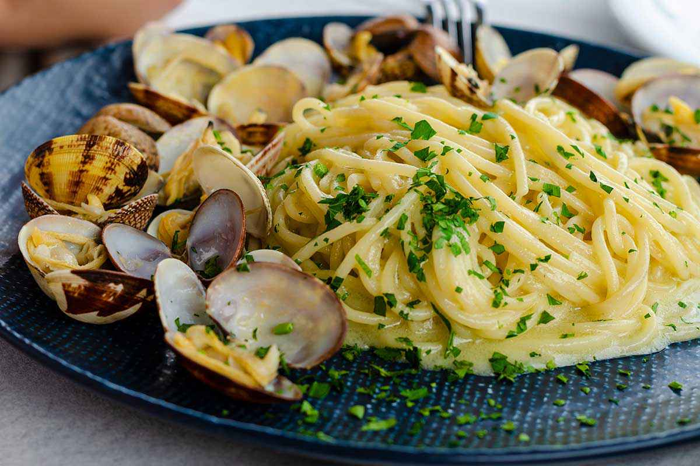

Spaghetti alle Vongole
A light dish perfect for a midweek supper treat!
The recipe for spaghetti with clams is one of the greatest classics of Italian cuisine.
This traditional dish from Campania is beloved everywhere!
Ingredients
- 140g spaghetti
- 500g fresh clams in shells
- 2 ripe tomatoes
- olive oil
- 1 fat garlic clove chopped
- 1 small or half a large fresh red chilli finely chopped
- splash white wine (about half a small glass)
- chopped parsley
Steps
- Put the water for the spaghetti on to boil.
- Rinse the clams in several changes of cold water.
Discard any that are open or damaged. - Cover the tomatoes with boiling water, leave for 1 min, then drain and slip off the skins.
Remove the seeds and chop the flesh. - Cook spaghetti according to pack instructions.
- Meanwhile, heat the oil in a large pan, add the garlic and chilli, then fry gently for a few seconds.
Stir in the tomatoes, then add the clams and a splash of wine, salt and pepper and bring to the boil.
Cover the pan and cook for 3-4 mins, until the clams are open. - Drain the pasta, then tip into the pan with the parsley and toss together.
Serve in bowls with bread for mopping up the juices.
Now that you've already tried this summery dish, we think you might also enjoy an Italian classic such as spaghetti carbonara or a meaty and creamy bolognese-style pasta dish!
Scroll to topReturn to main page